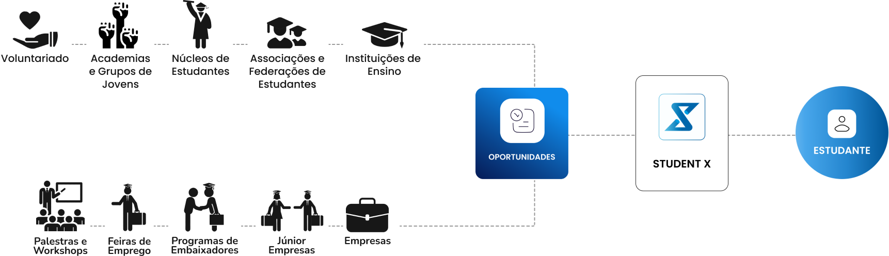
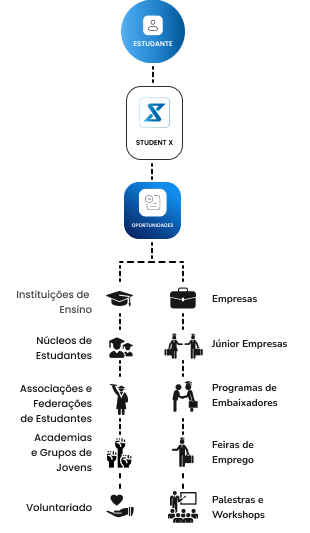

O STUDENT X é uma plataforma desenvolvida por estudantes,
que aproxima os jovens das inúmeras oportunidades organizadas por:


1. O que é o Student X?
O Student X é uma plataforma criada por estudantes e para estudantes, que visa divulgar e organizar dinâmicas e iniciativas realizadas pelas mais diversas organizações e instituições. O nosso objetivo é aproximar os estudantes das inúmeras oportunidades de desenvolvimento pessoal, curricular e profissional disponíveis, promovendo o crescimento e a excelência académica e profissional.
2. Como é que o Student X te pode ajudar?
O Student X pode ajudar-te a descobrir e aproveitar diversas oportunidades de desenvolvimento pessoal, curricular e profissional. Através da nossa plataforma, terás acesso a informações atualizadas sobre eventos, programas, workshops e outras iniciativas que contribuirão para o teu crescimento pessoal, académico e profissional. Queremos garantir que não perdes nenhuma oportunidade que possa ajudar-te a alcançar os teus objetivos.
3. Como pode o Student X ajudar a tua organização?
Como referido anteriormente o nosso objetivo é aproximar os estudantes de oportunidades de enriquecimento e desenvolvimento pessoal, curricular e profissional, para tal procederemos à devida divulgação e promoção das iniciativas, eventos e dinâmicas realizadas pelas mais diversas organizações e instituições, permitindo assim alcançar um público-alvo de estudantes interessados e motivados. Através da nossa rede, as oportunidades disponibilizadas pela tua associação serão amplamente promovidas, de forma totalmente gratuita, através das nossas comunidades, redes sociais e site, procurando aumentar a visibilidade e participação nos projetos realizados.
4. Como é que o Student X cria uma relação de benefício mútuo entre estudantes e organizações?
O Student X cria uma relação de benefício mútuo ao servir como uma ponte entre estudantes e organizações. As organizações beneficiam da nossa plataforma ao ganhar maior visibilidade e alcance para as suas iniciativas, enquanto os estudantes têm acesso facilitado a uma variedade de oportunidades que promovem o seu desenvolvimento. Esta colaboração permite que ambos os lados cresçam e alcancem os seus objetivos de forma mais eficaz.
5. As iniciativas divulgadas são regularmente atualizadas?
Sim, comprometemo-nos a manter todas as informações e iniciativas atualizadas. Trabalhamos continuamente para garantir que não perdes nenhuma oportunidade.
6. Preciso de pagar para ter acesso ao Student X?
Não, o Student X é completamente gratuito! Acreditamos que todos os alunos devem ter conhecimento e acesso igualitário às oportunidades que os levarão a alcançar o sucesso académico e profissional, daí disponibilizarmos a plataforma de forma gratuita.
7. Interessado em colaborar connosco?
Estamos sempre à procura de novas parcerias e colaborações que possam enriquecer a nossa comunidade. Se representas uma associação ou organização com iniciativas de desenvolvimento pessoal, curricular ou profissional, gostaríamos muito de te ouvir. Se também fores um jovem, seja de idade ou de espírito, que queira contribuir, estamos ansiosos por contar com a tua ajuda e entusiasmo.
8. Tens alguma pergunta, dúvida ou sugestão?
Questões, dúvidas ou sugestões serão sempre bem vindas! Não hesites em contactar-nos via email: contact.studentx@gmail.com ou através das nossas redes sociais.
9. Como tirar partido do Calendário?
O calendário organiza todas as iniciativas que ocorrerão ao longo do ano. Ao clicar numa determinada iniciativa que ocorrerá num determinado dia verás mais informações sobre a mesma. No canto superior direito encontrarás o botão: adicionar calendário, que te permitirá adicionar as iniciativas automaticamente ao teu próprio calendário.
10. Posso aceder à plataforma do Student X pelo meu telemóvel ou tablet?
Sim, a nossa plataforma é adaptável a diferentes dispositivos, de forma a que estejas sempre a par de novas iniciativas, estejas onde estiveres.
Atualmente, existem inúmeras iniciativas e oportunidades organizadas pelas mais diversas associações e instituições, mas muitos estudantes não têm conhecimento das mesmas ou têm dificuldade em encontrá-las. A falta de uma plataforma unificada e eficaz que organize estas oportunidades leva a que inúmeros estudantes percam valiosas experiências que fariam a diferença no seu percurso pessoal, curricular e profissional. Com este objetivo em mente, unimos as valências das nossas áreas de estudo tão distintas, mas complementares, gestão de recursos humanos, design e engenharia informática e multimédia para desenvolver o Student X, uma plataforma online que funciona como uma ponte entre quem proporciona essas oportunidades: organizações, instituições, associações e quem as procura: os estudantes.

ISCSP - Gestão de Recursos Humanos
ULL - Design
ISEL - Engenharia Informática e Multimédia